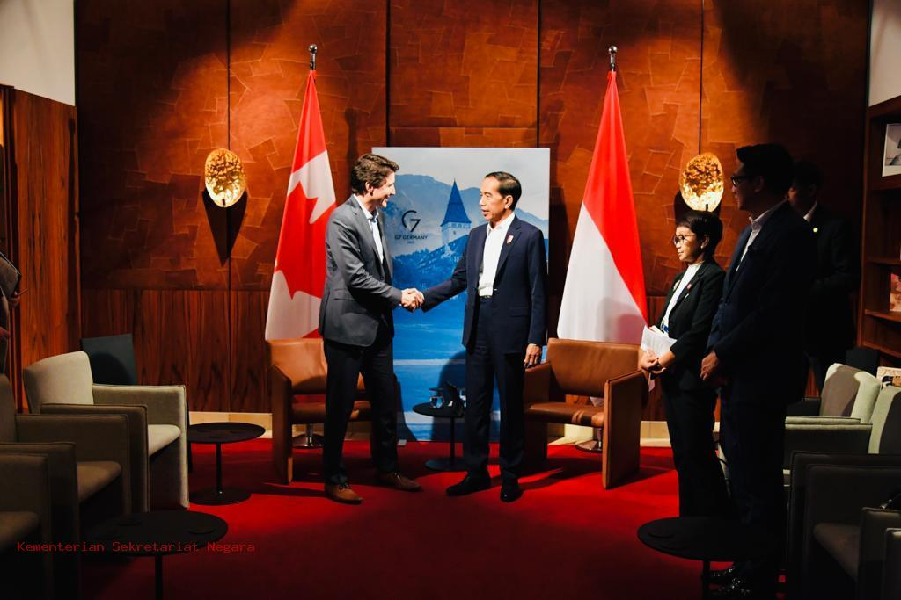
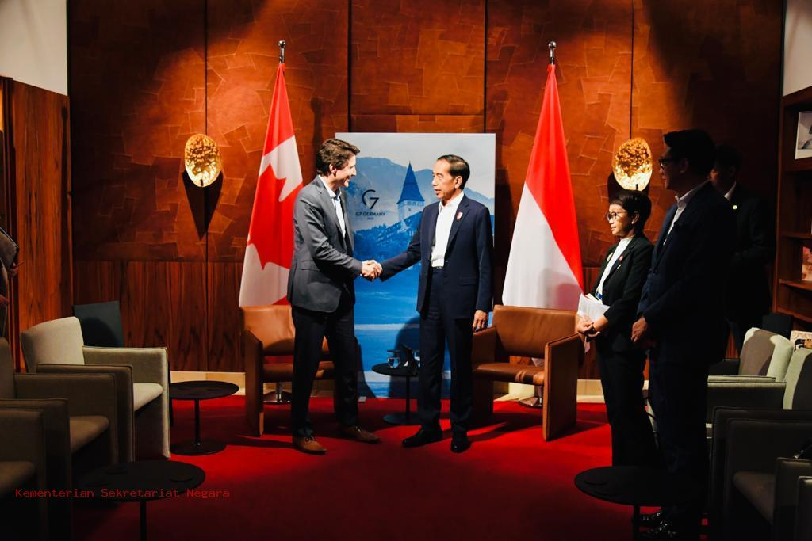

Perserikatan Bangsa-Bangsa (PBB) adalah organisasi internasional yang didirikan pada 24 Oktober 1945 dengan tujuan menjaga perdamaian dan keamanan dunia, mempromosikan kerja sama internasional, serta meningkatkan kesejahteraan dan hak asasi manusia. PBB beranggotakan 193 negara, yang bekerja sama di berbagai bidang melalui badan dan programnya.
Tujuan Utama PBB
Memelihara Perdamaian dan Keamanan Internasional
Mencegah konflik, mengelola krisis, dan mempromosikan solusi damai untuk sengketa antarnegara.
Meningkatkan Kerja Sama Ekonomi dan Sosial
Membantu negara-negara meningkatkan ekonomi dan kesejahteraan sosial melalui berbagai program dan bantuan.Membantu negara-negara meningkatkan ekonomi dan kesejahteraan sosial melalui berbagai program dan bantuan.
Melindungi Hak Asasi Manusia (HAM)
Menegakkan Deklarasi Universal HAM, serta melawan pelanggaran HAM di berbagai belahan dunia.
Mendukung Pengembangan Hukum Internasional
Mendorong ketaatan terhadap hukum internasional untuk mengatur hubungan antarnegara.
Contoh Kerja Sama dalam PBB
Pemulihan Pasca Konflik
Di Timor Leste, PBB mendukung pemilu dan pembangunan kapasitas pemerintahan setelah kemerdekaan dari Indonesia.
Perjanjian Paris (2015)
Negara-negara bekerja sama dalam mengurangi emisi karbon untuk membatasi kenaikan suhu global.
Respons Pandemi COVID-19 (2020)
WHO memimpin upaya global, termasuk distribusi vaksin melalui mekanisme COVAX.
Perlindungan Pengungsi
UNHCR membantu jutaan pengungsi Suriah mendapatkan tempat tinggal dan bantuan di negara-negara tetangga.
Penghapusan Kemiskinan
Melalui Agenda 2030 dan Tujuan Pembangunan Berkelanjutan (SDGs), PBB berfokus pada pengentasan kemiskinan dan kesenjangan.
Tantangan Kerja Sama dalam PBB
Kepentingan Politik Negara Anggota
Keputusan sering kali terhambat oleh veto atau perbedaan pendapat di Dewan Keamanan.
Ketergantungan pada Pendanaan
Banyak program PBB bergantung pada kontribusi negara maju, yang dapat terpengaruh oleh perubahan kebijakan domestik.
Efektivitas Implementasi
Dalam beberapa kasus, PBB dianggap lambat dalam menangani krisis atau konflik.
Ketimpangan Kekuasaan
Negara besar memiliki pengaruh lebih besar dalam pengambilan keputusan, seperti hak veto di Dewan Keamanan.
 
